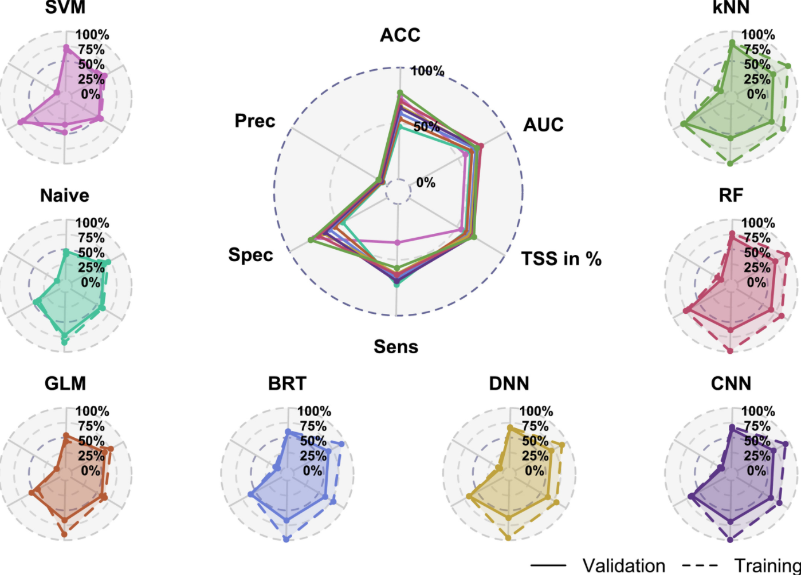

8 Data sets
You can download the data sets we use in the course here (ignore browser warnings) or by installing the EcoData package:
devtools::install_github(repo = "florianhartig/EcoData", subdir = "EcoData",
dependencies = TRUE, build_vignettes = FALSE)8.1 Titanic
The data set is a collection of Titanic passengers with information about their age, class, sex, and their survival status. The competition is simple here: Train a machine learning model and predict the survival probability.
The Titanic data set is very well explored and serves as a stepping stone in many machine learning careers. For inspiration and data exploration notebooks, check out this kaggle competition.
Response variable: “survived”
A minimal working example:
- Load data set:
library(EcoData)
data(titanic_ml)
titanic = titanic_ml
summary(titanic)## pclass survived name sex age sibsp
## Min. :1.000 Min. :0.0000 Length:1309 female:466 Min. : 0.1667 Min. :0.0000
## 1st Qu.:2.000 1st Qu.:0.0000 Class :character male :843 1st Qu.:21.0000 1st Qu.:0.0000
## Median :3.000 Median :0.0000 Mode :character Median :28.0000 Median :0.0000
## Mean :2.295 Mean :0.3853 Mean :29.8811 Mean :0.4989
## 3rd Qu.:3.000 3rd Qu.:1.0000 3rd Qu.:39.0000 3rd Qu.:1.0000
## Max. :3.000 Max. :1.0000 Max. :80.0000 Max. :8.0000
## NA's :655 NA's :263
## parch ticket fare cabin embarked boat body
## Min. :0.000 CA. 2343: 11 Min. : 0.000 :1014 : 2 :823 Min. : 1.0
## 1st Qu.:0.000 1601 : 8 1st Qu.: 7.896 C23 C25 C27 : 6 C:270 13 : 39 1st Qu.: 72.0
## Median :0.000 CA 2144 : 8 Median : 14.454 B57 B59 B63 B66: 5 Q:123 C : 38 Median :155.0
## Mean :0.385 3101295 : 7 Mean : 33.295 G6 : 5 S:914 15 : 37 Mean :160.8
## 3rd Qu.:0.000 347077 : 7 3rd Qu.: 31.275 B96 B98 : 4 14 : 33 3rd Qu.:256.0
## Max. :9.000 347082 : 7 Max. :512.329 C22 C26 : 4 4 : 31 Max. :328.0
## (Other) :1261 NA's :1 (Other) : 271 (Other):308 NA's :1188
## home.dest
## :564
## New York, NY : 64
## London : 14
## Montreal, PQ : 10
## Cornwall / Akron, OH: 9
## Paris, France : 9
## (Other) :639- Impute missing values (not our response variable!):
library(missRanger)
library(dplyr)
set.seed(123)
titanic_imputed = titanic %>% select(-name, -ticket, -cabin, -boat, -home.dest)
titanic_imputed = missRanger::missRanger(data = titanic_imputed %>%
select(-survived))##
## Missing value imputation by random forests
##
## Variables to impute: age, fare, body
## Variables used to impute: pclass, sex, age, sibsp, parch, fare, embarked, body
## iter 1: ...
## iter 2: ...
## iter 3: ...
## iter 4: ...titanic_imputed$survived = titanic$survived- Split into training and test set:
train = titanic_imputed[!is.na(titanic$survived), ]
test = titanic_imputed[is.na(titanic$survived), ]- Train model:
model = glm(survived~., data = train, family = binomial())- Predictions:
preds = predict(model, data = test, type = "response")
head(preds)## 561 321 1177 1098 1252 1170
## 0.79511615 0.29231652 0.01461978 0.12323274 0.14130063 0.11847391- Create submission csv:
write.csv(data.frame(y = preds), file = "glm.csv")And submit the csv on http://rhsbio7.uni-regensburg.de:8500.
8.2 Plant-pollinator Database
The plant-pollinator database is a collection of plant-pollinator interactions with traits for plants and pollinators. The idea is pollinators interact with plants when their traits fit (e.g. the tongue of a bee needs to match the shape of a flower). We explored the advantage of machine learning algorithms over traditional statistical models in predicting species interactions in our paper. If you are interested you can have a look here.

Response variable: “interaction”
A minimal working example:
- Load data set:
library(EcoData)
data(plantPollinator_df)
plant_poll = plantPollinator_df
summary(plant_poll)## crop insect type season diameter
## Vaccinium_corymbosum: 256 Andrena_wilkella : 80 Length:20480 Length:20480 Min. : 2.00
## Brassica_napus : 256 Andrena_barbilabris: 80 Class :character Class :character 1st Qu.: 5.00
## Carum_carvi : 256 Andrena_cineraria : 80 Mode :character Mode :character Median : 19.00
## Coriandrum_sativum : 256 Andrena_flavipes : 80 Mean : 27.03
## Daucus_carota : 256 Andrena_gravida : 80 3rd Qu.: 25.00
## Malus_domestica : 256 Andrena_haemorrhoa : 80 Max. :150.00
## (Other) :18944 (Other) :20000 NA's :9472
## corolla colour nectar b.system s.pollination
## Length:20480 Length:20480 Length:20480 Length:20480 Length:20480
## Class :character Class :character Class :character Class :character Class :character
## Mode :character Mode :character Mode :character Mode :character Mode :character
##
##
##
##
## inflorescence composite guild tongue body sociality
## Length:20480 Length:20480 Length:20480 Min. : 2.000 Min. : 2.00 Length:20480
## Class :character Class :character Class :character 1st Qu.: 4.800 1st Qu.: 8.00 Class :character
## Mode :character Mode :character Mode :character Median : 6.600 Median :10.50 Mode :character
## Mean : 8.104 Mean :10.66
## 3rd Qu.:10.500 3rd Qu.:13.00
## Max. :26.400 Max. :25.00
## NA's :17040 NA's :6160
## feeding interaction
## Length:20480 0 :14095
## Class :character 1 : 595
## Mode :character NA's: 5790
##
##
##
## - Impute missing values (not our response variable!) We will select only a few predictors here (you can work with all predictors of course).
library(missRanger)
library(dplyr)
set.seed(123)
plant_poll_imputed = plant_poll %>% select(diameter,
corolla,
tongue,
body,
interaction)
plant_poll_imputed = missRanger::missRanger(data = plant_poll_imputed %>%
select(-interaction))##
## Missing value imputation by random forests
##
## Variables to impute: diameter, corolla, tongue, body
## Variables used to impute: diameter, corolla, tongue, body
## iter 1: ....
## iter 2: ....
## iter 3: ....
## iter 4: ....plant_poll_imputed$interaction = plant_poll$interaction- Split into training and test set:
train = plant_poll_imputed[!is.na(plant_poll_imputed$interaction), ]
test = plant_poll_imputed[is.na(plant_poll_imputed$interaction), ]- Train model:
model = glm(interaction~., data = train, family = binomial())- Predictions:
preds = predict(model, newdata = test, type = "response")
head(preds)## 1 2 3 4 5 6
## 0.02887581 0.04972722 0.03670465 0.03670465 0.02713261 0.03996870- Create submission csv:
write.csv(data.frame(y = preds), file = "glm.csv")8.3 Wine
The data set is a collection of wines of different quality. The aim is to predict the quality of the wine based on physiochemical predictors.
For inspiration and data exploration notebooks, check out this kaggle competition. For instance, check out this very nice notebook which removes a few problems from the data.
Response variable: “quality”
We could theoretically use a regression model for this task but we will stick with a classification model.
A minimal working example:
- Load data set:
library(EcoData)
data(wine)
summary(wine)## fixed.acidity volatile.acidity citric.acid residual.sugar chlorides free.sulfur.dioxide
## Min. : 4.600 Min. :0.1200 Min. :0.0000 Min. : 0.900 Min. :0.01200 Min. : 1.00
## 1st Qu.: 7.100 1st Qu.:0.3900 1st Qu.:0.0900 1st Qu.: 1.900 1st Qu.:0.07000 1st Qu.: 7.00
## Median : 7.900 Median :0.5200 Median :0.2600 Median : 2.200 Median :0.07900 Median :14.00
## Mean : 8.335 Mean :0.5284 Mean :0.2705 Mean : 2.533 Mean :0.08747 Mean :15.83
## 3rd Qu.: 9.300 3rd Qu.:0.6400 3rd Qu.:0.4200 3rd Qu.: 2.600 3rd Qu.:0.09000 3rd Qu.:21.00
## Max. :15.900 Max. :1.5800 Max. :1.0000 Max. :15.500 Max. :0.61100 Max. :72.00
## NA's :70 NA's :48 NA's :41 NA's :60 NA's :37 NA's :78
## total.sulfur.dioxide density pH sulphates alcohol quality
## Min. : 6.00 Min. :0.9901 Min. :2.740 Min. :0.3300 Min. : 8.40 Min. :3.000
## 1st Qu.: 22.00 1st Qu.:0.9956 1st Qu.:3.210 1st Qu.:0.5500 1st Qu.: 9.50 1st Qu.:5.000
## Median : 38.00 Median :0.9968 Median :3.310 Median :0.6200 Median :10.20 Median :6.000
## Mean : 46.23 Mean :0.9968 Mean :3.311 Mean :0.6572 Mean :10.42 Mean :5.596
## 3rd Qu.: 62.00 3rd Qu.:0.9979 3rd Qu.:3.400 3rd Qu.:0.7300 3rd Qu.:11.10 3rd Qu.:6.000
## Max. :289.00 Max. :1.0037 Max. :4.010 Max. :2.0000 Max. :14.90 Max. :8.000
## NA's :78 NA's :78 NA's :25 NA's :51 NA's :905- Impute missing values (not our response variable!).
library(missRanger)
library(dplyr)
set.seed(123)
wine_imputed = missRanger::missRanger(data = wine %>% select(-quality))##
## Missing value imputation by random forests
##
## Variables to impute: fixed.acidity, volatile.acidity, citric.acid, residual.sugar, chlorides, free.sulfur.dioxide, total.sulfur.dioxide, density, pH, sulphates
## Variables used to impute: fixed.acidity, volatile.acidity, citric.acid, residual.sugar, chlorides, free.sulfur.dioxide, total.sulfur.dioxide, density, pH, sulphates, alcohol
## iter 1: ..........
## iter 2: ..........
## iter 3: ..........
## iter 4: ..........
## iter 5: ..........
## iter 6: ..........
## iter 7: ..........wine_imputed$quality = wine$quality- Split into training and test set:
train = wine_imputed[!is.na(wine$quality), ]
test = wine_imputed[is.na(wine$quality), ]- Train model:
library(ranger)
set.seed(123)
rf = ranger(quality~., data = train, classification = TRUE)- Predictions:
preds = predict(rf, data = test)$predictions
head(preds)## [1] 6 5 5 7 6 6- Create submission csv:
write.csv(data.frame(y = preds), file = "rf.csv")8.4 Nasa
A collection about asteroids and their characteristics from kaggle. The aim is to predict whether the asteroids are hazardous or not. For inspiration and data exploration notebooks, check out this kaggle competition.
Response variable: “Hazardous”
- Load data set:
library(EcoData)
data(nasa)
summary(nasa)## Neo.Reference.ID Name Absolute.Magnitude Est.Dia.in.KM.min. Est.Dia.in.KM.max. Est.Dia.in.M.min.
## Min. :2000433 Min. :2000433 Min. :11.16 Min. : 0.00101 Min. : 0.00226 Min. : 1.011
## 1st Qu.:3102682 1st Qu.:3102683 1st Qu.:20.10 1st Qu.: 0.03346 1st Qu.: 0.07482 1st Qu.: 33.462
## Median :3514800 Median :3514800 Median :21.90 Median : 0.11080 Median : 0.24777 Median : 110.804
## Mean :3272675 Mean :3273113 Mean :22.27 Mean : 0.20523 Mean : 0.45754 Mean : 204.649
## 3rd Qu.:3690987 3rd Qu.:3690385 3rd Qu.:24.50 3rd Qu.: 0.25384 3rd Qu.: 0.56760 3rd Qu.: 253.837
## Max. :3781897 Max. :3781897 Max. :32.10 Max. :15.57955 Max. :34.83694 Max. :15579.552
## NA's :53 NA's :57 NA's :36 NA's :60 NA's :23 NA's :29
## Est.Dia.in.M.max. Est.Dia.in.Miles.min. Est.Dia.in.Miles.max. Est.Dia.in.Feet.min. Est.Dia.in.Feet.max.
## Min. : 2.26 Min. :0.00063 Min. : 0.00140 Min. : 3.32 Min. : 7.41
## 1st Qu.: 74.82 1st Qu.:0.02079 1st Qu.: 0.04649 1st Qu.: 109.78 1st Qu.: 245.49
## Median : 247.77 Median :0.06885 Median : 0.15395 Median : 363.53 Median : 812.88
## Mean : 458.45 Mean :0.12734 Mean : 0.28486 Mean : 670.44 Mean : 1500.77
## 3rd Qu.: 567.60 3rd Qu.:0.15773 3rd Qu.: 0.35269 3rd Qu.: 832.80 3rd Qu.: 1862.19
## Max. :34836.94 Max. :9.68068 Max. :21.64666 Max. :51114.02 Max. :114294.42
## NA's :46 NA's :42 NA's :50 NA's :21 NA's :46
## Close.Approach.Date Epoch.Date.Close.Approach Relative.Velocity.km.per.sec Relative.Velocity.km.per.hr
## 2016-07-22: 18 Min. :7.889e+11 Min. : 0.3355 Min. : 1208
## 2015-01-15: 17 1st Qu.:1.016e+12 1st Qu.: 8.4497 1st Qu.: 30399
## 2015-02-15: 16 Median :1.203e+12 Median :12.9370 Median : 46532
## 2007-11-08: 15 Mean :1.180e+12 Mean :13.9848 Mean : 50298
## 2012-01-15: 15 3rd Qu.:1.356e+12 3rd Qu.:18.0774 3rd Qu.: 65068
## (Other) :4577 Max. :1.473e+12 Max. :44.6337 Max. :160681
## NA's : 29 NA's :43 NA's :27 NA's :28
## Miles.per.hour Miss.Dist..Astronomical. Miss.Dist..lunar. Miss.Dist..kilometers. Miss.Dist..miles.
## Min. : 750.5 Min. :0.00018 Min. : 0.06919 Min. : 26610 Min. : 16535
## 1st Qu.:18846.7 1st Qu.:0.13341 1st Qu.: 51.89874 1st Qu.:19964907 1st Qu.:12454813
## Median :28893.7 Median :0.26497 Median :103.19415 Median :39685408 Median :24662435
## Mean :31228.0 Mean :0.25690 Mean : 99.91366 Mean :38436154 Mean :23885560
## 3rd Qu.:40436.9 3rd Qu.:0.38506 3rd Qu.:149.59244 3rd Qu.:57540318 3rd Qu.:35714721
## Max. :99841.2 Max. :0.49988 Max. :194.45491 Max. :74781600 Max. :46467132
## NA's :38 NA's :60 NA's :30 NA's :56 NA's :27
## Orbiting.Body Orbit.ID Orbit.Determination.Date Orbit.Uncertainity Minimum.Orbit.Intersection
## Earth:4665 Min. : 1.00 2017-06-21 06:17:20: 9 Min. :0.000 Min. :0.00000
## NA's : 22 1st Qu.: 9.00 2017-04-06 08:57:13: 8 1st Qu.:0.000 1st Qu.:0.01435
## Median : 16.00 2017-04-06 09:24:24: 8 Median :3.000 Median :0.04653
## Mean : 28.34 2017-04-06 08:24:13: 7 Mean :3.521 Mean :0.08191
## 3rd Qu.: 31.00 2017-04-06 08:26:19: 7 3rd Qu.:6.000 3rd Qu.:0.12150
## Max. :611.00 (Other) :4622 Max. :9.000 Max. :0.47789
## NA's :33 NA's : 26 NA's :49 NA's :137
## Jupiter.Tisserand.Invariant Epoch.Osculation Eccentricity Semi.Major.Axis Inclination
## Min. :2.196 Min. :2450164 Min. :0.00752 Min. :0.6159 Min. : 0.01451
## 1st Qu.:4.047 1st Qu.:2458000 1st Qu.:0.24086 1st Qu.:1.0012 1st Qu.: 4.93290
## Median :5.071 Median :2458000 Median :0.37251 Median :1.2422 Median :10.27694
## Mean :5.056 Mean :2457723 Mean :0.38267 Mean :1.4009 Mean :13.36159
## 3rd Qu.:6.017 3rd Qu.:2458000 3rd Qu.:0.51256 3rd Qu.:1.6782 3rd Qu.:19.47848
## Max. :9.025 Max. :2458020 Max. :0.96026 Max. :5.0720 Max. :75.40667
## NA's :56 NA's :60 NA's :39 NA's :53 NA's :42
## Asc.Node.Longitude Orbital.Period Perihelion.Distance Perihelion.Arg Aphelion.Dist Perihelion.Time
## Min. : 0.0019 Min. : 176.6 Min. :0.08074 Min. : 0.0069 Min. :0.8038 Min. :2450100
## 1st Qu.: 83.1849 1st Qu.: 365.9 1st Qu.:0.63038 1st Qu.: 95.6430 1st Qu.:1.2661 1st Qu.:2457815
## Median :172.6347 Median : 504.9 Median :0.83288 Median :189.7729 Median :1.6182 Median :2457972
## Mean :172.1717 Mean : 635.5 Mean :0.81316 Mean :184.0185 Mean :1.9864 Mean :2457726
## 3rd Qu.:254.8804 3rd Qu.: 793.1 3rd Qu.:0.99718 3rd Qu.:271.9535 3rd Qu.:2.4497 3rd Qu.:2458108
## Max. :359.9059 Max. :4172.2 Max. :1.29983 Max. :359.9931 Max. :8.9839 Max. :2458839
## NA's :60 NA's :46 NA's :22 NA's :48 NA's :38 NA's :59
## Mean.Anomaly Mean.Motion Equinox Hazardous
## Min. : 0.0032 Min. :0.08628 J2000:4663 Min. :0.000
## 1st Qu.: 87.0069 1st Qu.:0.45147 NA's : 24 1st Qu.:0.000
## Median :186.0219 Median :0.71137 Median :0.000
## Mean :181.2882 Mean :0.73732 Mean :0.176
## 3rd Qu.:276.6418 3rd Qu.:0.98379 3rd Qu.:0.000
## Max. :359.9180 Max. :2.03900 Max. :1.000
## NA's :40 NA's :48 NA's :4187- Impute missing values (not our response variable!):
library(missRanger)
library(dplyr)
set.seed(123)
nasa_imputed = missRanger::missRanger(data = nasa %>% select(-Hazardous),
maxiter = 1, num.trees = 5L)##
## Missing value imputation by random forests
##
## Variables to impute: Neo.Reference.ID, Name, Absolute.Magnitude, Est.Dia.in.KM.min., Est.Dia.in.KM.max., Est.Dia.in.M.min., Est.Dia.in.M.max., Est.Dia.in.Miles.min., Est.Dia.in.Miles.max., Est.Dia.in.Feet.min., Est.Dia.in.Feet.max., Close.Approach.Date, Epoch.Date.Close.Approach, Relative.Velocity.km.per.sec, Relative.Velocity.km.per.hr, Miles.per.hour, Miss.Dist..Astronomical., Miss.Dist..lunar., Miss.Dist..kilometers., Miss.Dist..miles., Orbiting.Body, Orbit.ID, Orbit.Determination.Date, Orbit.Uncertainity, Minimum.Orbit.Intersection, Jupiter.Tisserand.Invariant, Epoch.Osculation, Eccentricity, Semi.Major.Axis, Inclination, Asc.Node.Longitude, Orbital.Period, Perihelion.Distance, Perihelion.Arg, Aphelion.Dist, Perihelion.Time, Mean.Anomaly, Mean.Motion, Equinox
## Variables used to impute: Neo.Reference.ID, Name, Absolute.Magnitude, Est.Dia.in.KM.min., Est.Dia.in.KM.max., Est.Dia.in.M.min., Est.Dia.in.M.max., Est.Dia.in.Miles.min., Est.Dia.in.Miles.max., Est.Dia.in.Feet.min., Est.Dia.in.Feet.max., Close.Approach.Date, Epoch.Date.Close.Approach, Relative.Velocity.km.per.sec, Relative.Velocity.km.per.hr, Miles.per.hour, Miss.Dist..Astronomical., Miss.Dist..lunar., Miss.Dist..kilometers., Miss.Dist..miles., Orbiting.Body, Orbit.ID, Orbit.Determination.Date, Orbit.Uncertainity, Minimum.Orbit.Intersection, Jupiter.Tisserand.Invariant, Epoch.Osculation, Eccentricity, Semi.Major.Axis, Inclination, Asc.Node.Longitude, Orbital.Period, Perihelion.Distance, Perihelion.Arg, Aphelion.Dist, Perihelion.Time, Mean.Anomaly, Mean.Motion, Equinox
## iter 1: .......................................nasa_imputed$Hazardous = nasa$Hazardous- Split into training and test set:
train = nasa_imputed[!is.na(nasa$Hazardous), ]
test = nasa_imputed[is.na(nasa$Hazardous), ]- Train model:
library(ranger)
set.seed(123)
rf = ranger(Hazardous~., data = train, classification = TRUE,
probability = TRUE)- Predictions:
preds = predict(rf, data = test)$predictions[,2]
head(preds)## [1] 0.6879548 0.7865111 0.0020000 0.7919698 0.1693063 0.1920595- Create submission csv:
write.csv(data.frame(y = preds), file = "rf.csv")8.5 Flower
A collection of over 4000 flower images of 5 plant species. The data set is from kaggle but we downsampled the images from \(320*240\) to \(80*80\) pixels. You can download the data set here.
Notes:
- Check out convolutional neural network notebooks on kaggle (they are often written in Python but you can still copy the architectures), e.g. this one.
- Last year’s winners have used a transfer learning approach (they achieved around 70% accuracy), check out this notebook, see also the section about transfer learning 5.4.2.
Response variable: “Plant species”
- Load data set:
library(tensorflow)
library(keras)
set_random_seed(321L, disable_gpu = FALSE) # Already sets R's random seed.
train = EcoData::dataset_flower()$train/255
test = EcoData::dataset_flower()$test/255
labels = EcoData::dataset_flower()$labelsLet’s visualize a flower:
train[100,,,] %>%
image_to_array() %>%
as.raster() %>%
plot()
- Build and train model:
model = keras_model_sequential()
model %>%
layer_conv_2d(filters = 4L, kernel_size = 2L,
input_shape = list(80L, 80L, 3L)) %>%
layer_max_pooling_2d() %>%
layer_flatten() %>%
layer_dense(units = 5L, activation = "softmax")
### Model fitting ###
epochs = 50L
batch_size = 25L
steps = floor(dim(train)[1]/batch_size)
generator = keras::flow_images_from_data(x = train,
y = keras::k_one_hot(labels, 5L),
batch_size = batch_size)
optim = optimizer_adamax(learning_rate = 0.01)
epoch_losses = c()
for(e in 1:epochs){
epoch_loss = c()
for(s in 1:steps){
batch = reticulate::iter_next(generator)
with(tf$GradientTape() %as% tape,
{
pred = model(batch[[1]])
loss = keras::loss_categorical_crossentropy(batch[[2]], pred)
loss = tf$reduce_mean(loss)
}
)
gradients = tape$gradient(target = loss, sources = model$weights)
optim$apply_gradients(purrr::transpose(list(gradients, model$weights)))
epoch_loss = c(epoch_loss, loss$numpy())
}
epoch_losses = c(epoch_losses, epoch_loss)
cat("Epoch: ", e, " Loss: ", mean(epoch_losses), " \n")
}- Predictions:
# Prediction on training data:
pred = apply(model %>% predict(train), 1, which.max)
Metrics::accuracy(pred - 1L, labels)
table(pred)
# Prediction for the submission server:
pred = model %>% predict(test) %>% apply(1, which.max) - 1L
table(pred)- Create submission csv:
write.csv(data.frame(y = pred), file = "cnn.csv")